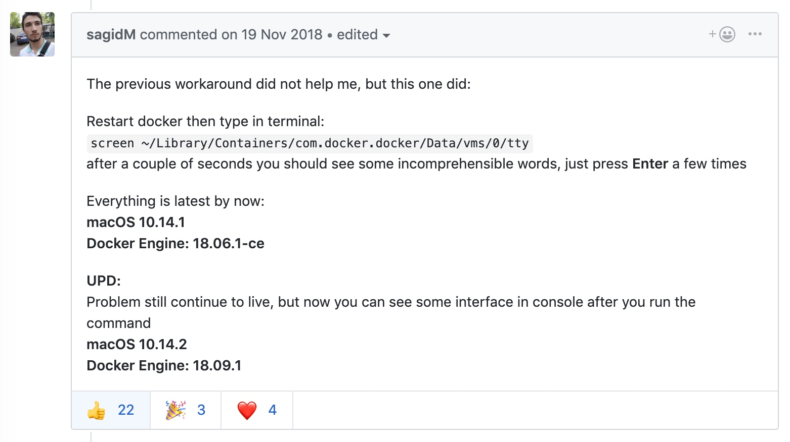

1. quicktime player 录制屏幕的时候不能暂停怎么办？
文章转载自：https://zhidao.baidu.com/question/2117520508734516867.html
Mac自带的QuickTime还是很强大的，不过在录制的时候发现只能停止，不能暂停，其实是有解决方法的，按照以下步骤进行：
- 打开QuickTime Player，点击影片->新建屏幕录制（ˆ ⌘N）
- 点击鼠标左键开始录制（选取区域也行） 注意，下面是关键步骤3.点击dock上的QuickTime player图标，让QuickTime处于活动状态 4.按下键盘的Esc出来正在录制的QuickTime界面，点击中间的停止可以停止录制
- 按下键盘的option（Alt）键，这时候奇迹出现了，停止按键变成了暂停，
- 下面的不用说喽~ 另外，QuickTime还可以录制iPhone、iPad等的屏幕，在新建影片录制里，录制后面有个下三角，点击一下，可以选择的。
2. 高分辨率下解决虚拟机模糊的问题
Mac 分辨率太高导致虚拟机中字体模糊，调高分辨率后字体太小看不清怎么办？主要原因是hidpi设置问题。 解决办法是： 1、安装hidpi相关驱动 2、打开虚拟机显示中的相关设置
如果开启hidpi后字体太小，可以前往虚拟操作系统的设置中设置dpi值，不同桌面环境的设置位置和方法略有不同。
Docker for Mac 卡在 "is starting"
解决方案来自：https://github.com/docker/for-mac/issues/2420 中的sagidM的回复
本机环境： macOS 10.14.4 Docker Engine: 18.09.2

大意是，打开终端然后输入screen ~/Library/Containers/com.docker.docker/Data/vms/0/tty，接着回车几次，就 ok 了。事实证明这个方法确实能解决问题。如果你输入一次没什么反应，就多开几个终端多试几次就可以了。
Mac下的 VMware Fusion 端口映射
文章转载自：https://blog.csdn.net/weixin_43302757/article/details/82911332
Windows版本VM进行端口映射有相关的设置界面，但是Mac系统的VM（VMware Fusion）没有。Google 以下找到相关方法。具体步骤如下
打开配置文件
sudo vi /Library/Preferences/VMware\ Fusion/vmnet8/nat.conf
找到如下配置
[incomingtcp]
# Use these with care - anyone can enter into your VM through these...
# The format and example are as follows:
#<external port number> = <VM's IP address>:<VM's port number>
23 = 172.16.161.129:22 #将IP172.16.161.129虚拟机的22 端口映射到主机23端口
重启VM的网络服务
sudo /Applications/VMware\ Fusion.app/Contents/Library/vmnet-cli --stop
sudo /Applications/VMware\ Fusion.app/Contents/Library/vmnet-cli --start
Mac 终端设置欢迎页
cd /etc
sudo pico motd
输入密码后会打开nano，然后在里面输入图案或者文字。然后保存后退出，之后打开终端就能看到欢迎页了。
其实本质就是在/etc目录下创建文件 motd，然后往里面写内容即可。
我只是添加了一段文字，结果如下：

使用Mac对磁盘进行分区，显示“Mediakit报告设备商的空间不足以执行此操作”
网上大部分都写的去 windows 中使用DiskGenius重新分区，这搞麻烦了，不用这么麻烦的。
1、打开终端，输入diskutil list列出磁盘内容，这里我们可以找到要格式化的磁盘，我是 disk2
2、卸载要格式化的磁盘diskutil unmountDisk force disk2
3、写入启动扇区sudo dd if=/dev/zero of=/dev/disk2 bs=1024 count=1024
4、对磁盘进行分区diskutil partitionDisk disk2 GPT JHFS+ "AWESOME DISK" 0g
5、打完收工，写博客发出来。
iterm2 常用技巧
按住 com 键
- 可以拖拽选中字符串
- 点击url能直接打开
- 点击文件：调用默认程序打开文件
- 点击文件夹：在finder中打开文件夹
- 同时按住option键，可以矩形选中
新建windows：cmd+N 新建tab：cmd+T 切分屏幕：cmd+D水平切分 智能查找，支持正则：cmd+F
智能补全：cmd+； 调用历史记录：cmd+shift+h
Mac大小写切换
无论中文还是英文状态下,按住 shift 输入即是大写
长按 caps lock 2s 灯亮后输入即是大写
校验文件md5
打开终端 使用命令 md5 或 shawun 即可查看。
修改Mac主机名、计算机名
$sudo scutil --set ComputerName 你想要的计算机名称
$sudo scutil --set HostName 你想要的主机名称
举例：
$sudo scutil --set HostName lonelyor
使用以下命令查看主机名或计算机名
$ scutil --get ComputerName
$ scutil --get HostName
Mac 启动 apache
apachectl start
Mac 启动 tomcat
brew services start tomcat 开始
brew services stop tomcat 停止